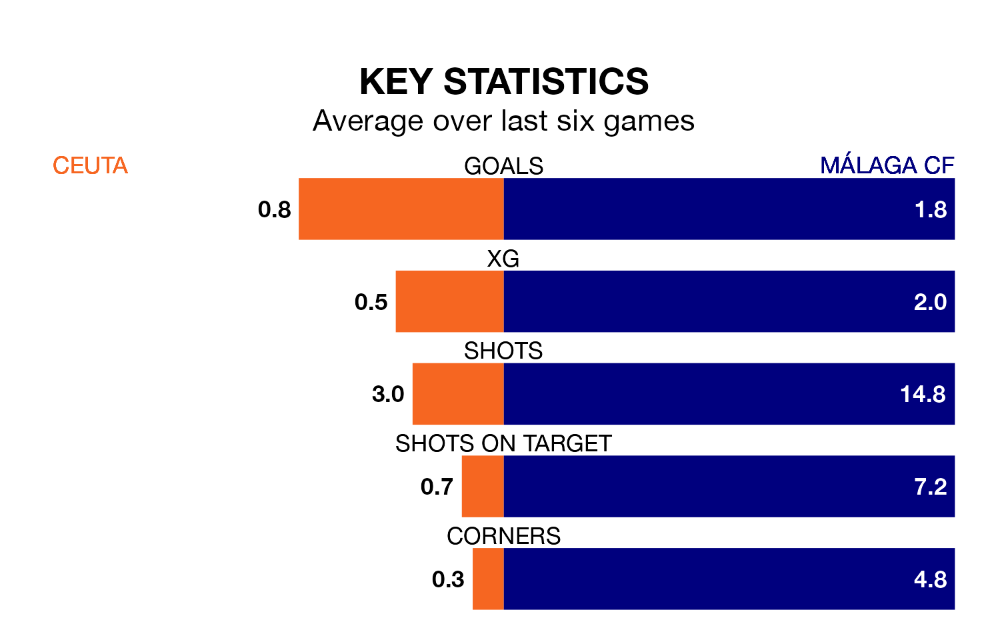

Málaga CF face Ceuta on Sunday seeking to protect their long unbeaten run in Primera Division RFEF Group 2.
Málaga are unbeaten in five, with three wins and two draws, ahead of the 11am kick-off.
They face a Ceuta team who have drawn three and lost two over the same number of games.
With 27 goals in 18 games so far this season, Málaga are scoring more than average in the league with 1.5 goals per game. And they are conceding fewer than average, letting in 14 goals at a rate of 0.8 per game.
Ceuta, meanwhile, are below average scorers, with 1.1 goals per game, compared to a league average of 1.2. They have conceded 1.0 goal per game.
The away side are third in the table after 18 games, of which they have won 10 and drawn six, earning 36 points.
The hosts are seven places behind Málaga in 10th, with six wins and seven draws putting them on 25 points.
In Alejandro Meléndez Ruiz, Ceuta have one of the league's most on-form strikers so far this season. He has notched one goal in one appearance, to sit third in the scoring charts.
Málaga's top scorer, with one goal in one game, is Genaro Rodríguez Serrano.
Ceuta's last match was on January 3, a 0-0 draw against Antequera CF.
Málaga drew 2-2 with Intercity last time out, on January 2, with Daniel Lorenzo Guerrero and Roberto Fernández Jaén on the scoresheet.
Updated: 13:38 (UTC), 10/01/24